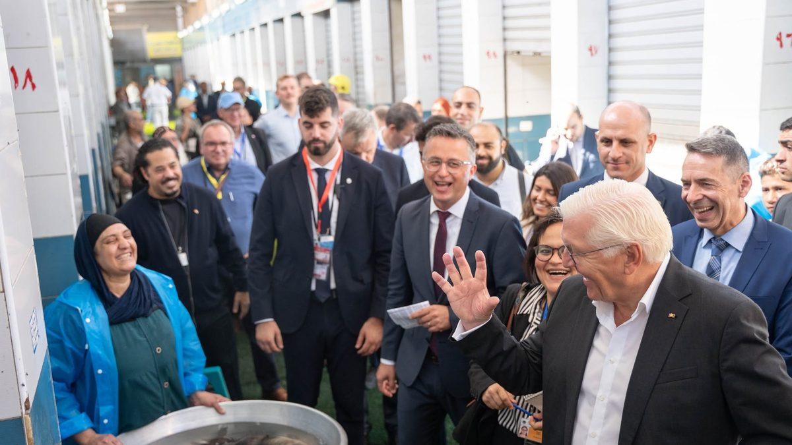
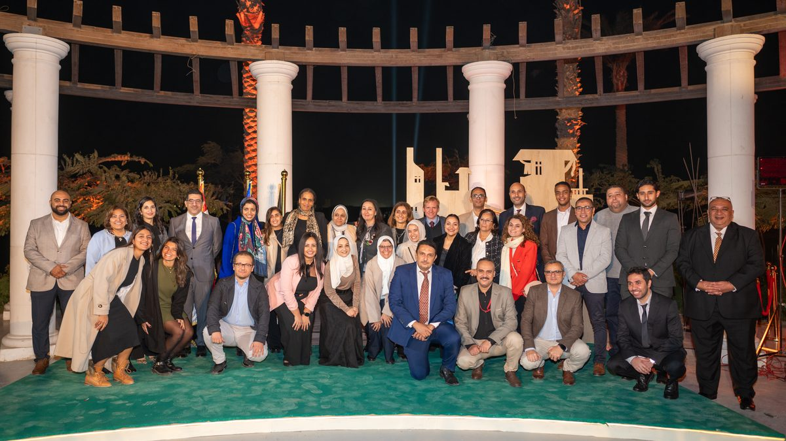
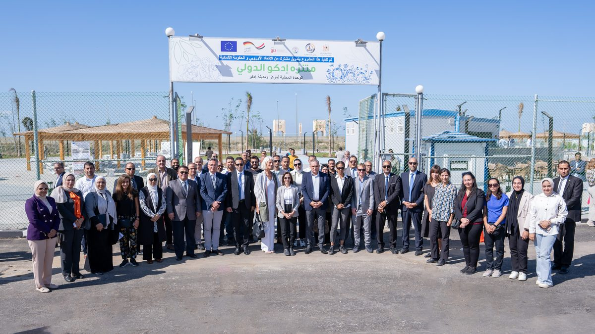
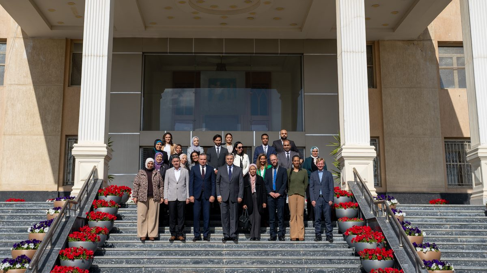
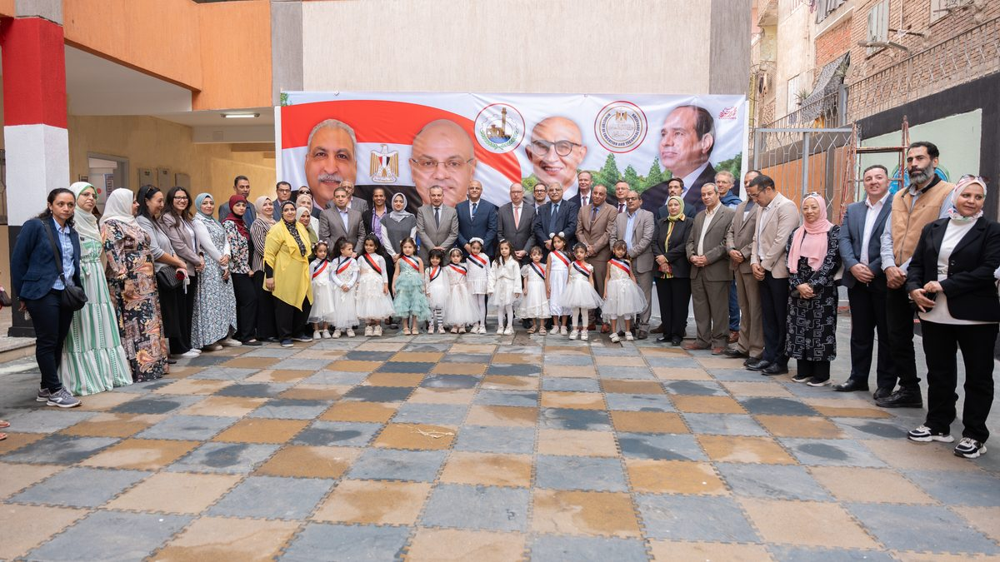
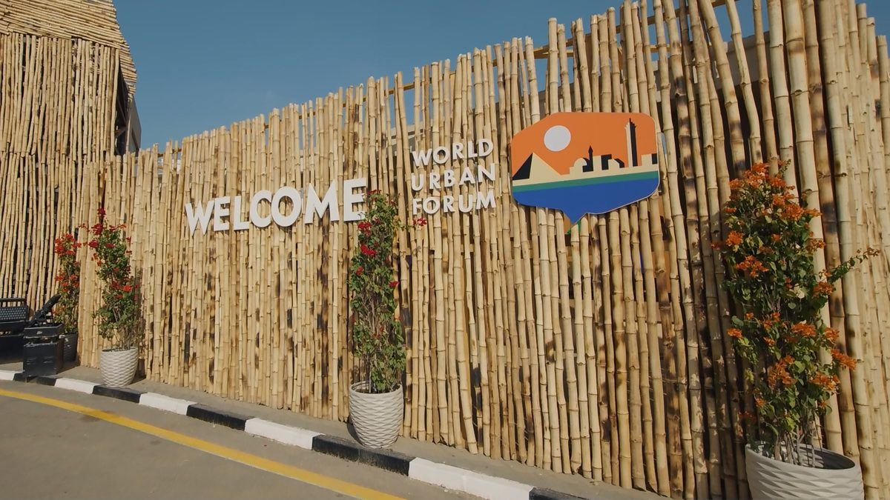

GIZ Egypt, CBUID
Communications and visibility for Capacity Building through Urban Infrastructure Development, an urban infrastructure programme co-funded by the European Union and BMZ.
- September 2024 to February 2025
- Communication Advisor (Leave Coverage)
- GIZ Egypt
Context
The programme's first phase ran from 2020 to 2024 in Alexandria, Beheira and Assiut. It covered public infrastructure, employment, construction and rehabilitation, and institutional development for climate-resilient and socially just urban development.
I joined for the final months of that phase, covering the communications and visibility role during a colleague's leave. That period held the programme's most public moments.
What I did
The German President's visit
Facilitated the visit for the programme.
- Reception
- PR support
- Social media post and press release
Closing ceremony
Planned and managed the event with the CBUID team and an external agency.
- VIP liaison with the minister, governors, government officials, the European Union and the German Embassy
- Photos and videos exhibited to present the programme's achievements
- Media relations
- Directed the closing video with the agency
Inaugurations in Beheira and Alexandria
Led PR and event delivery in Beheira, representing GIZ with the governor's office and Idko City Council. Assisted with PR and the event in Alexandria, working with the governor's office. Wrote the social media posts and chose the pictures for both.
World Urban Forum
Planned the pre-WUF tour and represented GIZ on it. Directed the GIZ at WUF video. Produced design and posts for four sessions, including the policy dialogue and a session on a just urban transition for African cities.
Eight documentary videos
Managed the production process with an agency under a GIZ service contract.
Ongoing communication
Posts on climate-resilient urban development and education, plus video translation and subtitles.
Programme results I communicated
These are the first phase's outcomes, not mine. My job was to present them accurately to ministers, partners and the public.
- 750,000+ residentsLiving in the three target areas.
- 800+ traineesIn vocational training.
- 446 of 598Entrepreneurship participants were women.
- 345 officialsLocal administrators and operators trained in urban management.
- 4 schoolsRehabilitated, serving more than 4,500 students.
- 140,000+ residentsServed by two upgraded health units and a new emergency department at Abu Qir.
Samples
Published by GIZ Egypt. What I did on each is noted underneath.
Events
-

The German President's visit
Reception, PR support, press release and post.
-

CBUID closing ceremony
Event planning, VIP liaison, exhibited materials and the closing video.
-

Urban development achievements in Beheira
PR and event delivery, with the governor's office and Idko City Council.
-

Urban development achievements in Alexandria
Assisted with PR and the event, with the governor's office.
World Urban Forum
-

Pre-WUF tour
PR and event planning, representing GIZ.
-

GIZ at WUF video
Directed the video.
Towards a just urban transition for African cities
Graphic design and post.
Policy dialogue
Graphic design and post.
Unplanned informal settlements
Post and picture selection.
Locally adaptable technologies for refugee and IDP settlements
Post and picture selection.
Ongoing communication
Climate-resilient urban development
Post, video translation and subtitles.
Enhancing education in Egypt
Post.
What I learned
GIZ changed how I see institutions, and how I see my own work.
Before it, I had worked mostly in smaller NGOs, agencies and creative environments. This was my first time inside a large international institution, with its programmes, stakeholders, government partners and processes.
What surprised me most was how different the reality was from the image of it from outside. I met people who could be difficult or demanding, and who worked very differently from me, but who were also hardworking and responsible for work with real impact. It taught me to pay less attention to personalities and more to what people actually carry and produce.
It also changed how I understand communication. A press release, an event or a video is often the visible end of months of technical work, coordination and negotiation. Before I can communicate something well, I need to understand what sits behind it.
It did not make me idealise large institutions. It gave me a clearer idea of where I want my own work to sit, between substance, strategy and communication.